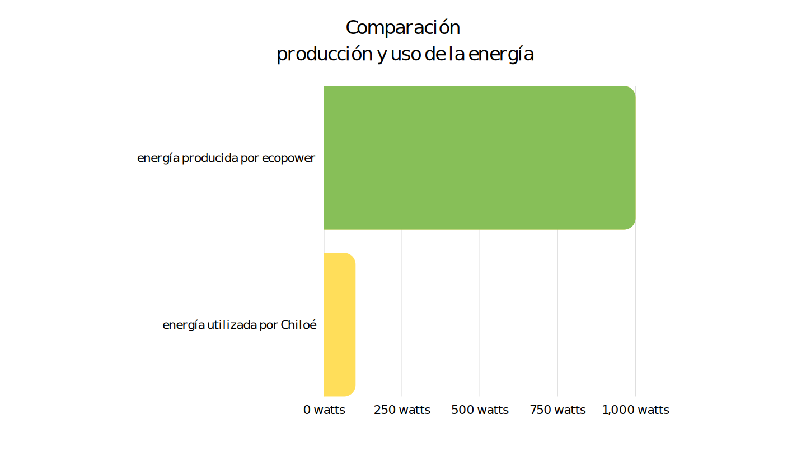

Por Ignacia Quiroga, Emilia Gálvez y Isidora Retamal PUBLICADO EL 29 DE JUNIO DE 2023
La isla de Chiloé pertenece a una de las pocas zonas de Chile que ha mantenido su identidad cultural a lo largo de los años, sin embargo, debido a su gran diversidad geográfica empresas como Ecopower se aprovechan de
estos territorios para desarrollar sus proyectos sin prever los impactos que traería a la comunidad que habita la zona, generando una gran desconfianza entre los agentes involucrados.
Este proyecto eólico tiene su origen cerca del año 2010, bajo la conducción de la empresa EcoPower, compañía con capitales de Chile y Suecia ,quienes han decidido instalar dicho proyecto en la comuna de Ancud, Chiloé. En su
creación este proyecto abarca 42 molinos de viento con una capacidad instalada total de 100.8 MW
PROYECTO EÓLICO (CONTEXTUALIZACIÓN)
1.1 Creación del proyecto
Este proyecto eólico tiene su origen cerca del año 2010, bajo la conducción de la empresa EcoPower, compañía con capitales de Chile y Suecia ,quienes han decidido instalar dicho proyecto en la comuna de Ancud, Chiloé. En su
creación este proyecto abarca 42 molinos de viento con una capacidad instalada total de 100.8 MW
1.2 Ubicación geográfica.
Mapa de la zona de Mar Brava con aerogeneradores
Se ubica geográficamente en la Región de Los Lagos, Isla Grande de Chiloé, a 21 kilómetros al oeste de la zona urbana de Ancud, específicamente, en la zona entre el humedal de Quilo y la playa de Mar Brava-Bahía de Polocuhue. El
proyecto contempla una superficie de ocupación de 1.000 hectáreas. El espacio geográfico utilizado en este proyecto corresponde a una localidad rural, en la cual viven alrededor de 5.000 personas.
1.3 Ecopower
Ecopower,es una empresa que opera principalmente en el sector terciario de la economía , con el fin de entregar servicios relacionados con la energía eléctrica. Fue fundada en 2007 con capitales nacionales y suecos. Actualmente
su CEO es Julio Albarrán Ríos y su gerente de operaciones es Patricio Ponce.
II. Energías verdes
2.1 Qué es la energía eólica
La energía eólica es aquella que se obtiene a partir del uso eficiente del viento, es decir, se aprovecha la energía cinética de las masas de aire. La energía eólica ,se caracteriza por ser renovable, de naturaleza “limpia” e
“inagotable” sin embargo, ocasiona contaminación acústica y lumínica para aves migratorias.
2.2 Inversión
La empresa representante de este proyecto es Ecopower, empresa chilena con capitales nacionales y suecos, que cuenta con una inversión de US$ 250 millones para el proyecto (Ecopower, 2017).
2.3 Demanda y abastecimiento
La finalidad de este proyecto es: satisfacer la demanda energética a nivel país. crear mejor interconectividad para la zona, terminando con el aislamiento del archipiélago No obstante, el abastecimiento energético corresponde a
tal cantidad en donde la provincia de Chiloé no consume ni un 10% de esa energía generada.

Gráfico comparitivo de producción y consumo de energía
III. Impactos
3.1 Impacto ambiental
Azota directamente el ecosistema consolidado en la zona, como las modificaciones del suelo, erosión, alteración arqueológica y pérdida del valor paisajístico. También afecta considerablemente a más de 3000 aves migratorias
(perjudicadas por la contaminación acústica), además de las cientos de especies terrestres endémicas. Influye también negativamente en el avistamiento de cetáceos, ya que la zona de Mar Brava posee la mayor concentración de
ballenas azules del hemisferio sur.
Aves endémicas afectadas
3.2 Impacto sociocultural
El discurso sustentable social, surgido por la comunidad y las organizaciones opositoras, se relaciona a discursos de las comunidades Huilliches que habitan la zona (aproximadamente 5000 habitantes), quienes hacen hincapié en la
cosmovisión y conservación del territorio sagrado. Además, se creó una desconfianza entre los agentes principales del proyecto y los habitantes debido a la nula consideración respecto al proyecto eólico, sin ser consultados
previamente.
3.3 Impacto económico interno
Las actividades productivas presentes en el área de estudio se vinculan a labores agrícolas, ganaderas, de pesca artesanal y turísticas, desde un enfoque rural y ecológico, las cuales se verían afectadas con la instalación de
estas megaestructuras.
Principales actividades productivas afectadas
IV. Contexto político
4.1 Desregulaciones políticas
Gráfica temporal de hitos.
4.2 Movimientos políticos
Los principales movimientos y agrupaciones en contra son los siguientes: Comunidades indígenas huilliches (Aukako y Punta Chilen), Comunidades rurales afectadas, ciudadanos chilotes, Diputada Jenny Álvarez, Diputado Fidel
Espinoza, Concejal Rodolfo Norambuena, CECPAN, Centro de Conservación Cetácea de Chile, Movimiento por la Defensa del Territorio de Mar Brava Lacuy de Ancud, Macheros de Mar Brava, Sindicato Nueva Alianza, Guías de Turismo de
Chile, Sindicato de Trabajadores el Viento Fuerte de Puñihuil, Agrupación Productiva las Hormiguitas de Pumillahue, Comité Productivo los Robles, Junta de Vecinos Pumillahue, Sindicato de Trabajadores Independientes Pescadores
Artesanales Mariscadores, Acuicultores, recolectores y otros, Agrupación de Buceo Turismo Aventura Corona, Sindicato de Trabajadores Independientes Los Delfines. Sindicatos, agrupaciones sociales, comités, juntas de vecinos,
comunidades indígenas
Los principales movimientos de impacto político a favor serian: empresa Ecopower, Municipalidad, Comunidades rurales afectadas, ciudadanos chilotes, Comunidades Indígenas Calle, Antu Lafquen Huentetique y Catruman, Corporación
Canelo de Nos, SEA, Conaf